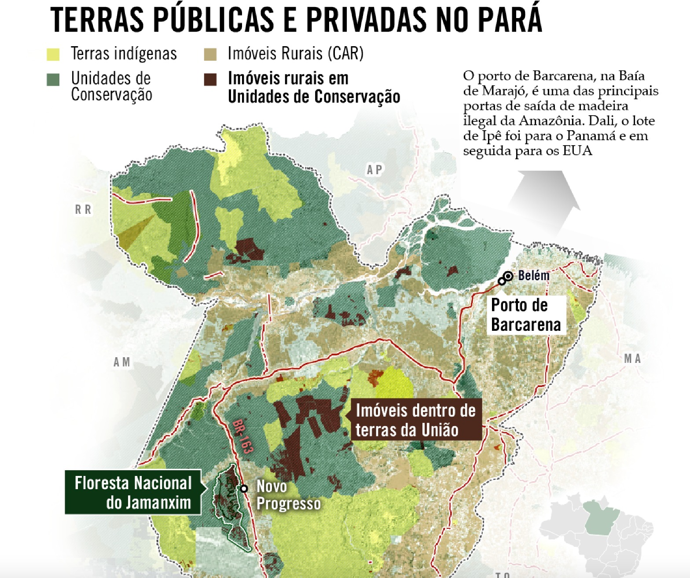
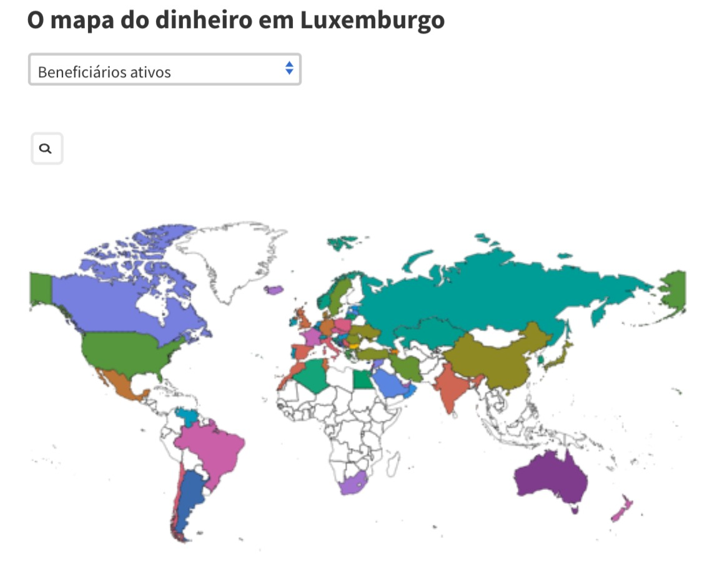
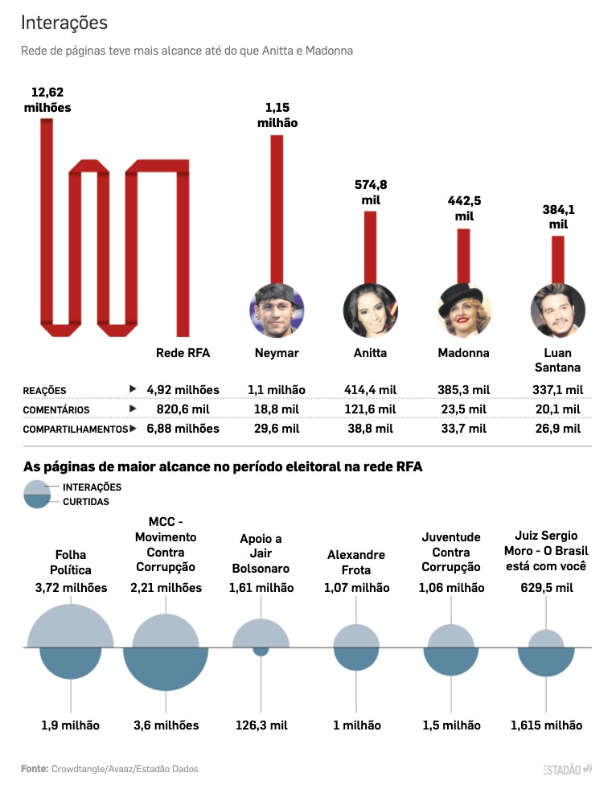

Reportagens e projetos produzidos
Como o ipê extraído ilegalmente do Brasil vai parar em Nova York (OCCRP, Revista Piauí)
Investigação jornalística independente descobriu como funciona o esquema ilegal de exportação de madeira, com envolvimento do PCC e até servidores. Esta reportagem teve origem em uma análise de planilhas de terras griladas e cruzamento com bases de dados públicas.
Versão em inglês (OCCRP) Versão em português (Revista PiauíInvestigando empresas offshore secretas em Luxemburgo (OCCRP)
Este projeto transnacional revelou como empresas offshore em Luxemburgo foram usadas por políticos, autoridades públicas e celebridades para esconder dinheiro, muitas vezes ligado ao crime e casos de corrupção. No Brasil foram identificados um advogado próximo ao presidente Bolsonaro, a mãe do senador Aécio Neves e outros. Os dados foram raspados de um site do governo pelo jornal Le Monde e analisado pelo consórcio internacional de jornalismo investigativo OCCRP, representado por mim no Brasil.
Leia todas as reportagens em inglês Leia as versões em portuguêsExpondo o impacto mundial da China Tabacos (OCCRP)

Série de reportagens transnacional que mostrou o crescimento da maior empresa de tabaco do mundo, China Tobaco, e os efeitos dessa expansão nos países em que atua. No Brasil, em parceria com o Intercept Brasil, mostramos como produtores de tabaco têm se endividado e adoecido para cumprir contratos apresentados pela empresa.
Leia todo o projeto Leia a história sobre o BrasilRevelando como autoridades públicas e artistas usaram aeronaves sem licença (CNN Brasil)

Políticos, governos, celebridades e até sindicatos têm contratado serviços de táxi-aéreo sem a devida licença para operar. Está série de reportagens levou à sanção de empresas, abertura de investigações e à cassação do funcionamento de uma delas.
Leia a sérieMapeando quem está por trás de uma gigante rede de desinformação (Estadão)
Usei dados de interações no Facebook para identificar o mais influente grupo que espalhava textos enganosos durante as eleições presidenciais em 2018. Descobri que as páginas eram controladas por uma única empresa, cuja história remetia aos protestos de 2013 contra a corrupção. Somadas, as interações dessas páginas superavam celebridades como Madonna, Neymar e Anitta. O Facebook decidiu remover todas as páginas uma semana após a reportagem, com base na matéria.
Leia a reportagem.No Enem, 1 a cada 4 alunos de classe média triunfa. Pobres são 1 a cada 600

Levantamento mostra que só 293 estudantes nas piores condições socioeconômicas possíveis obtiveram notas semelhantes a de alunos de escolas de elite no maior exame do País. Conheça a história de alguns destes jovens.
Read the storyFazendo uma cidade economizar R$ 14 milhões em dinheiro público (Estadão)

...ao expor que uma licitação já tinha os vencedores decididos mesmo antes do prazo final de inscrições. O governo da cidade de São Paulo decidiu cancelar a licitação por causa da reportagem e iniciar um novo pregão, com mais concorrentes.
Leia a reportagemDisparidades raciais e de gênero no resultado do Enem (Estadão Dados)

Uma análise mostra as diferenças entre raça e gênero nas 1 mil melhores e 1 mil piores notas do Enem.
Leia a reportagemRevelando o uso ilegal de auxílio-moradia em universidades (Estadão)

...ao expor que servidores de alto escalão de universidades públicas pediam diárias para locomoção quando, na verdade, já residiam na cidade onde atuavam. Depois da reportagem, o Tribunal de Contas do Estado de SP disse que estes servidores deveriam devolver o dinheiro recebido com as diárias.
Leia a reportagemRevelando como o Itamaraty facilitou a importação de cloroquina e favoreceu empresários próximos ao presidente (CNN Brasil)

Documentos exclusivos revelaram como o governo federal passou por cima de questionamentos jurídicos e de boas práticas em compras públicas para agilizar a compra de um remédio sem eficácia comprovada contra a Covid-19. Os achados foram usados por parlamentares para pedir investigação sobre a compra.
Leia as reportagensBolsonaro vence em 97% dos municípios mais ricos; Haddad, em 98% dos mais pobres (Estadão Dados)

Entre os mil municípios com os maiores IDHs do País, Bolsonaro venceu em 967, enquanto Haddad conquistou 33. Já nas mil cidades menos desenvolvidas, Haddad ganhou em 975 e Bolsonaro em 25.
Leia a reportagemMonitorando todos os pedidos de acesso à informação ao governo federal em um só arquivo (Columbia Journalism School - NYC)

Eu criei dois robôs que monitoram como o governo federal responde aos pedidos registrados por meio da Lei de Acesso à Informação. Um deles baixa e salva em planilha todos os pedidos de informação em um determinado períoodo de tempo, com uma determinada palavra-chave de interesse do usuário. O outro busca por pedidos negados com base na alegação de que as informações seriam pessoais (LGPD).
Leia uma apresentação (em inglês) Acesse o código